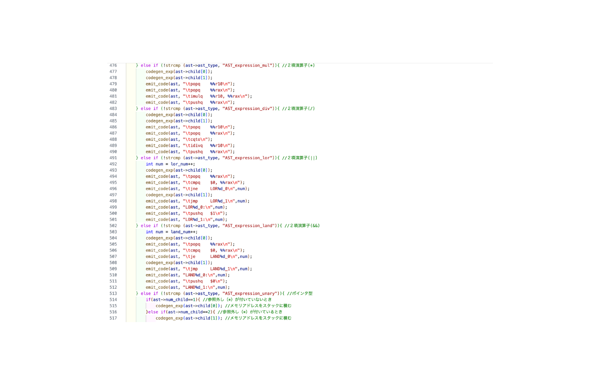

このプロジェクトは、大学のコンパイラ構成の授業で実施したコンパイラの実装課題です。2024年に、C言語のサブセットをコンパイルするコンパイラの実装に取り組みました。
プロジェクト名
コンパイラ実装：C言語サブセットのコンパイラ
実施時期
2024年
目的・概要
本プロジェクトの目的は、C言語のサブセットをx86-64アセンブリにコンパイルするコンパイラを実装することです。以下の機能を段階的に実装しました：
- レベル1：long型の大域変数、代入式、while文、二項演算子（<, +, -）
- レベル2：long型の局所変数と関数引数、if文、if-else文、return文、二項演算子（==, ||, &&, *, /）
- レベル3：ポインタ型、単項演算子（*, &）、ポインタ演算（+, -）
- 拡張課題：int型とchar型の実装
使用技術・ツール
C言語を使用し、主に以下の技術を活用しました：
- アセンブリ言語（x86-64）
- コンパイラの各フェーズ（構文解析、意味解析、コード生成）
- メモリ管理とレジスタ割り当て
- ポインタ操作と型システム
実装の工夫点
1. 効率的なポインタ演算
- 算術シフト命令を使用して、ポインタ演算を最適化
- データ型のサイズに基づく効率的なメモリアクセス
2. 引数への代入機能
- 関数内での引数への代入操作を実装
- 左辺値としての引数と通常の引数の区別を実装
3. ラベル管理システム
- if、if-else、while、論理演算子用の固有ラベル生成
- ネストされた構造でも一意なラベル名を保証
4. コードの可読性と保守性
- 機能ごとに明確に分離されたコード構造
- 段階的な機能追加を考慮した設計
課題と改善点
プロジェクトを通じて以下の課題と改善点を特定しました：
- ポインタ演算の実装の複雑さ
- 型チェックとメモリ管理の最適化
- エラー処理の強化
- コード生成の効率化
制作過程
この課題では、既存のcodegen.cを修正・拡張する形でコンパイラの実装を進めました。0からコンパイラを作るのではなく、基本的な枠組みが用意されていたため、比較的スムーズに課題に取り組むことができました。
この課題を通じて、プログラミング言語がどのように解釈され、実行可能なコードに変換されるのかについて深く理解することができました。コンパイラの各フェーズ（構文解析、意味解析、コード生成）の役割と重要性を実践的に学ぶことができ、貴重な経験となりました。